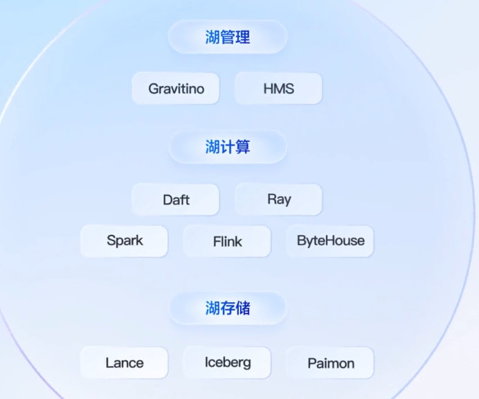
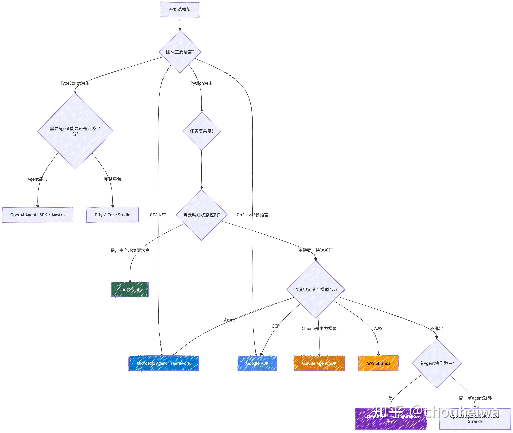

Hive → Iceberg 数据迁移文档（保留 Hive 仓库完整可用）
配套文档：《Iceberg-1.11.0-部署文档.md》 环境：hadoop105 客户端节点（Spark 4.1.3 / Flink 2.1.3 / Iceberg 1.11.0）；Hive 3.1.3 在 hadoop102 迁移后 Iceberg 数据落在新存储位置
hdfs://hadoop102:8020/warehouse/iceberg
1. 迁移目标与总原则
- 目标：把 Hive 数仓中的表迁移为 Iceberg 格式，数据写入新存储位置
- 硬性要求：迁移完成后，Hive 数据仓库原样保留、和以前完全一样可用（表名不变、数据不动、可继续正常读写）
- 基于该要求的方式选型：
| 方式 | 是否采用 | 角色 | 对 Hive 侧影响 |
|---|---|---|---|
| CTAS 复制 | ✅ | 正式迁移方案 | 零改动，彻底解耦 |
| snapshot 快照 | ✅ | 迁移前验证手段 | 零改动（共享引用源文件，只读验证用） |
| ~~migrate~~ | ❌ | 不采用 | 会把源表改名 BACKUP 并接管原表名，改变了 Hive 侧，不符合本需求 |
| ~~add_files~~ | ❌ | 不采用 | 文件归 Iceberg 所有，expire_snapshots 会物理删除 Hive 目录下的文件 |
一句话：snapshot 用来"先试"，CTAS 用来"真迁"。
2. 迁移前准备
2.1 让 Spark 能看到 Hive 仓库的表
# 把 Hive 配置放进 Spark classpath（spark_catalog 才能映射到 Hive 仓库）
cp /opt/module/hive-client-conf/hive-site.xml /opt/module/spark/conf/
验证（hadoop105 上执行 spark-sql --master yarn）：
2.2 确认 Iceberg catalog 可用
部署文档已配置名为 iceberg 的 catalog（warehouse = hdfs://hadoop102:8020/warehouse/iceberg）：
2.3 盘点源表（建迁移清单）
对每张待迁移表执行：
记录以下信息，决定迁移路径：
| 检查项 | 处理方式 |
|---|---|
| 格式 Parquet / ORC / Avro / Text | 直接 CTAS（CTAS 不限格式，Spark 能读即可） |
transactional=true（ACID 表） |
Spark 读不了，走 6.1 节特殊处理 |
| 分桶表 | CTAS 不受限，桶语义见 6.3 节 |
| 分区字段 | 记下来，3.2/3.3 节要用 |
3. 方式一：CTAS 复制（正式迁移）
原理：
CREATE TABLE ... AS SELECT把 Hive 表数据复制成 Iceberg 表的新文件，写入/warehouse/iceberg新位置。源表全程零改动，迁移后两套数据完全独立、互不影响。
3.1 小表 / 非分区表：一次性复制
CREATE TABLE iceberg.iceberg_db.orders
USING iceberg
TBLPROPERTIES ('format-version'='2')
AS SELECT * FROM spark_catalog.hive_db.orders;
3.2 分区表：保留分区结构
CREATE TABLE iceberg.iceberg_db.dwd_trade
USING iceberg
PARTITIONED BY (dt)
TBLPROPERTIES ('format-version'='2')
AS SELECT * FROM spark_catalog.hive_db.dwd_trade;
说明：
PARTITIONED BY (dt)是 identity 分区，与 Hive 分区一一对应； 后续可利用 Iceberg 分区演进（如days(dt)）无损优化，无需重写数据。
3.3 大表：按分区分批复制（生产推荐）
避免单个大任务超时/OOM，先建空表再逐分区灌数：
-- 1) 用 WHERE 1=0 秒建同构空表
CREATE TABLE iceberg.iceberg_db.dwd_trade
USING iceberg
PARTITIONED BY (dt)
AS SELECT * FROM spark_catalog.hive_db.dwd_trade WHERE 1=0;
-- 2) 逐分区灌数
INSERT INTO iceberg.iceberg_db.dwd_trade
SELECT * FROM spark_catalog.hive_db.dwd_trade WHERE dt = '2026-07-20';
批量脚本 batch_copy.sh（自动遍历所有分区）：
#!/bin/bash
SRC=spark_catalog.hive_db.dwd_trade
DST=iceberg.iceberg_db.dwd_trade
for p in $(spark-sql --master yarn -e "SHOW PARTITIONS $SRC" 2>/dev/null | grep -o 'dt=[^/|]*' | cut -d= -f2 | sort -u); do
echo "===== copying partition dt=$p ====="
spark-sql --master yarn -e "INSERT INTO $DST SELECT * FROM $SRC WHERE dt='$p'"
done
提示：单分区仍很大时，调大
spark.sql.shuffle.partitions与 executor 内存； 多个表可并行多个 spark-sql 会话分别复制。
3.4 数据校验（每张表必做）
-- 总量对比
SELECT count(*) FROM spark_catalog.hive_db.dwd_trade;
SELECT count(*) FROM iceberg.iceberg_db.dwd_trade;
-- 分区级对比（两段结果应逐行一致）
SELECT dt, count(*) AS c FROM spark_catalog.hive_db.dwd_trade GROUP BY dt ORDER BY dt;
SELECT dt, count(*) AS c FROM iceberg.iceberg_db.dwd_trade GROUP BY dt ORDER BY dt;
-- 指标抽查（按业务字段，如金额求和）
SELECT sum(amount) FROM spark_catalog.hive_db.dwd_trade;
SELECT sum(amount) FROM iceberg.iceberg_db.dwd_trade;
3.5 迁移窗口的增量补偿
若复制期间 Hive 表仍在写入，切换前对增量分区分区重灌（先删后插，幂等）：
DELETE FROM iceberg.iceberg_db.dwd_trade WHERE dt >= '2026-07-20';
INSERT INTO iceberg.iceberg_db.dwd_trade
SELECT * FROM spark_catalog.hive_db.dwd_trade WHERE dt >= '2026-07-20';
4. 方式二：snapshot 快照（迁移前验证）
原理：Iceberg 官方
snapshot存储过程，秒级创建一张引用源表现有数据文件的 Iceberg 表，不复制任何数据，源表完全不动。用于正式 CTAS 之前验证查询正确性与性能。
4.1 创建快照表
CALL iceberg.system.snapshot(
'spark_catalog.mt_ods.ods_mt_medical_record_first_disease',
'iceberg.mt_ods_ice.ods_mt_medical_record_first_disease'
);
-- 输出 imported_files_count：引用的数据文件数
4.2 验证
-- 行数应与源表一致
SELECT count(*) FROM iceberg.iceberg_db.dwd_trade_snap;
-- 业务查询试跑 + 性能对比
SELECT * FROM iceberg.iceberg_db.dwd_trade_snap WHERE dt = '2026-07-20' LIMIT 10;
-- 可用 Flink sql-client 读同一 catalog，验证跨引擎可见
4.3 清理快照表
4.4 风险与限制（务必知晓）
- 快照表与源表共享同一批数据文件：源表若执行 DELETE / OVERWRITE / DROP，底层文件被删，快照表随即损坏 → 快照只在验证窗口内使用，验证完立即 DROP
- 快照表禁止 expire_snapshots（Iceberg 强制保护共享文件，防止误删 Hive 数据）
- 源表后续新写入的数据不会出现在快照中（快照只引用创建时刻的文件清单），两侧会分叉
- 因此：正式迁移一律走 CTAS，不要把快照表当正式表长期使用
5. 迁移后验证清单（两侧都要查）
5.1 Hive 侧（hadoop102，beeline）——确认"和以前一样"
✅ 表在、数在、查询正常 = Hive 仓库零影响，达成目标。
5.2 Iceberg 侧（hadoop105，spark-sql）
SELECT count(*) FROM iceberg.iceberg_db.dwd_trade;
SELECT file_path, record_count FROM iceberg.iceberg_db.dwd_trade.files;
SELECT * FROM iceberg.iceberg_db.dwd_trade.snapshots;
再用 Flink sql-client 读一次（验证跨引擎）：SELECT count(*) FROM iceberg_db.dwd_trade;
5.3 HDFS 新存储位置
hdfs dfs -ls /warehouse/iceberg/iceberg_db/dwd_trade/ # 应有 data/ 与 metadata/
hdfs dfs -du -h /warehouse/iceberg # 新增存储与源表相当，属预期
6. 特殊场景
6.1 Hive ACID 事务表（transactional=true）
Spark/Flink 均无法读取 Hive ACID 表。先在 Hive 侧（beeline）导出为普通外部表，再走 CTAS：
CREATE EXTERNAL TABLE hive_db.xxx_export
STORED AS PARQUET
LOCATION 'hdfs://hadoop102:8020/tmp/export/xxx'
AS SELECT * FROM hive_db.xxx;
-- 然后对 hive_db.xxx_export 执行第 3 章 CTAS 流程
6.2 Text / JSON SerDe 表
直接 CTAS 即可（Spark 能读就能迁），无需特殊处理。
6.3 分桶表
CTAS 不受分桶限制。如需保留桶语义（ bucket join 等），建表时用 Iceberg transform：
CREATE TABLE iceberg.iceberg_db.xxx
USING iceberg
PARTITIONED BY (bucket(16, id))
AS SELECT * FROM spark_catalog.hive_db.xxx;
7. 回滚方案
- CTAS 方案：Hive 侧全程零改动，天然无回滚负担；若要废弃 Iceberg 表：
DROP TABLE iceberg.iceberg_db.xxx PURGE;（只删/warehouse/iceberg下的新数据） - snapshot 方案：
DROP TABLE ..._snap;即可，共享文件不动
8. FAQ
| 问题 | 处理 |
|---|---|
| CTAS 大表 OOM / 超时 | 改用 3.3 按分区分批复制，调大 executor 内存与 spark.sql.shuffle.partitions |
| 分区表 CTAS 后查不到分区 | 确认 PARTITIONED BY 的列名、顺序与源表分区列一致 |
| snapshot 表查询报错 | 源表在快照后被改动过，DROP 后重建快照 |
| 校验行数不一致 | 复制期间源表有新写入，按 3.5 节做增量补偿后重验 |
| ACID 表 CTAS 直接报错 | Spark 不支持读 Hive ACID 表，走 6.1 节导出流程 |
SHOW TABLES IN spark_catalog 看不到 Hive 表 |
hive-site.xml 未放进 $SPARK_HOME/conf/，见 2.1 节 |
| 迁移后想统一表名入口 | 业务切到 Iceberg catalog 同名表即可；Hive 侧原名不受影响 |
参考来源：Iceberg Spark Procedures（snapshot/add_files/migrate 官方语义，2026-07 核实）


